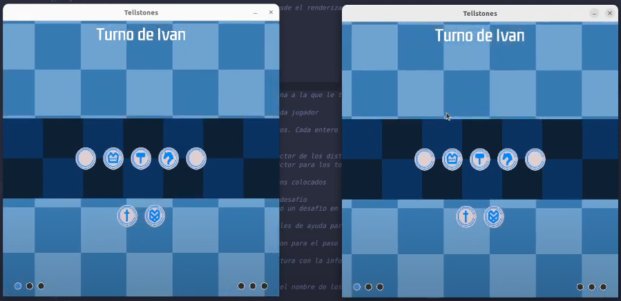
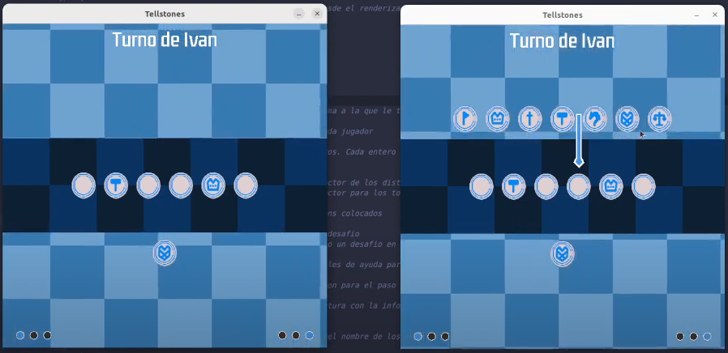

Este proyecto se trata de una adaptación del juego de mesa de Riot Games: Tellstones. Consiste en un juego de memoria para dos jugadores, donde ambos jugadores tienen que memorizar las posiciones de las fichas del tablero que ellos mismos van modificando.
Este juego está hecho para Linux y se puede compilar usando Makefile. Hay que tener en cuenta que para su compilación es necesario tener instalado en la máquina g++ y SDL. El juego usa una topología cliente servidor usando el protocolo tcp. El jugador puede decidir si quiere crear un servidor o si por el contrario prefiere unirse a uno ya existente.
Capturas del juego
En el juego contamos la linea. Las piezas que hay colocadas sobre la linea son las piezas que hay ahora mismo en juego. En cada turno el jugador puede realizar una serie de movimientos, los cuales son: colocar una pieza sobre la linea, intercambiar de posicion dos piezas de la linea, voltear boca abajo una pieza de la linea y por último preguntar al rival por una pieza que esté volteada. Si el rival acierta gana un punto, pero si lo falla lo ganamos nosotros.

